Quantitative Reasoning
1015SCG
Lecture 5
Functions
What is a function? 🤔
Function Machine
Functions
What is a function? 🤔
A function is a rule that associates a unique output to each input.
Definition: A function assigns to each element of $X$ (set of numbers) exactly one element of $Y$ (also a set of numbers).
The set $X$ is called the domain of the function and the set $Y$ is called the range of the function.
Functions
$f(x) = 3x+2$
|
$f(3) = 3(3)+2$ $\quad\;\;\,\, =9 + 2$ $\quad\;\;\,\, =11$ |
$f(-5) = 3(-5)+2$ $\quad\;\;\,\, = -15+2$ $\quad\;\;\,\, = -13$ |
Functions
$f(x) = x^2-2x+4$
|
$f(-4) = (-4)^2-2(-4)+4$ $\qquad\,\, =16 + 8+4$ $\qquad\,\,=28$ |
$f(2a) = (2a)^2-2(2a)+4$ $\qquad\,\,= 4a^2-4a+4$
|
Functions


|
The domain of $f(x)$ is the set of all possible values of $x$ for which the function is defined (i.e. all the values of $x$ that can be used with the function). The range of $f (x)$ is the set of all possible values that can be returned by the function. |
Functions
Consider the function $f(x)= \dfrac{1}{x-5}$

|
$f(0) = \dfrac{1}{(0)-5}$ $=-\dfrac{1}{5}$ $f(-2) = \dfrac{1}{(-2)-5}$ $=-\dfrac{1}{7}$ $f(9) = \dfrac{1}{(9)-5}$ $=\dfrac{1}{4}$ $f(5) = \,$ Not possible! 1/0! Domain: All real values of $x,$ except $x=5.$ Range: All real values except $0.$ |
Elementary functions
Polynomials
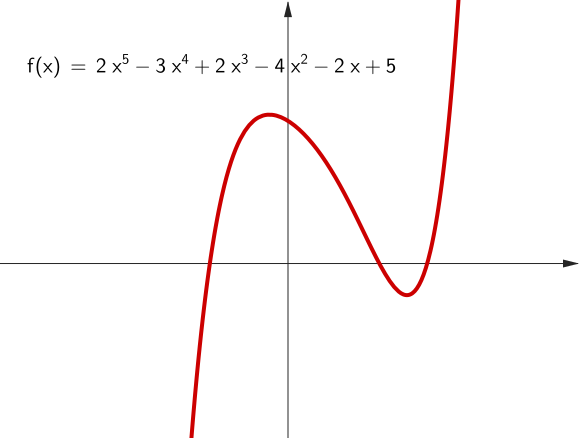
Exponentials & Logarithms
|
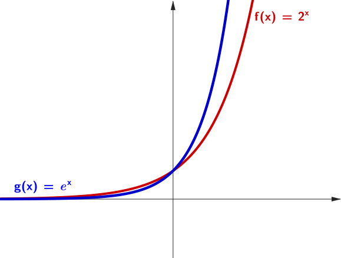 |
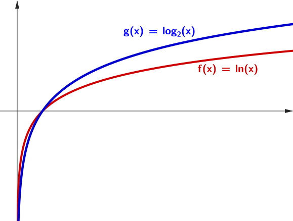 |
|---|
Recall: Index Laws
|
Extra:
$\large a^{\frac{1}{n}} = \sqrt[n]{a}$ |
Recall: Logarithm Laws
- Product Law: $\;\log_a\left(M\times N\right)$ $=\log_a M + \log_a N$
- Quotient Law: $\;\log_a\left(\dfrac{M}{N}\right)$ $=\log_a M - \log_a N$
- Power Law: $\;\log_a\left(N^p\right)$ $= p \times \log_a (N)$
- Trivial identities: $\;\log_a(a) = 1\;$ and $\;\log_a(1) = 0 $
These rules work for any base \( a > 0 ,\) \( a \ne 1 .\)
Recall: Change of Base Rule
\[ \large \log_b (N) = \frac{\log_a (N)}{\log_a (b)} \] where \( a \) can be 10 (common log) or \( e \) (natural log).
Example: $\log_2 10$ $ =\dfrac{\log_{10} 10}{\log_{10} 2} $ $ \approx \dfrac{1}{0.3010}$ $\approx 3.32$
Trigonometric functions
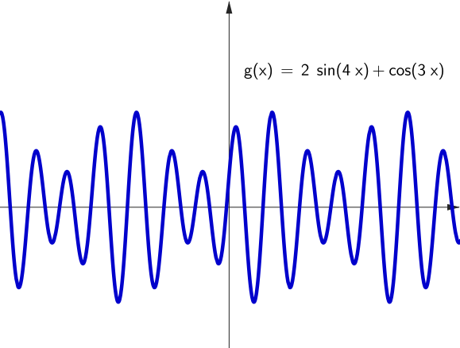
Recall: sin / cos / tan ratios
|
\(\sin\left(\theta \right) = \dfrac{\text{opposite}}{\text{hypotenuse}}\) \(\cos\left(\theta \right) = \dfrac{\text{adjacent}}{\text{hypotenuse}}\) \(\tan\left(\theta \right) = \dfrac{\text{opposite}}{\text{adjacent}}\) |
Elementary functions
| Function | Expression |
|---|---|
| Polynomials (linear, quadratic, etc...) | \(a_nx^n + a_{n-1}x^{n-1}+\cdots a_1 x + a_0\) |
| Absolute value | \(|x|\) |
| Square root | \(\sqrt{x}\) |
| Exponentials | \(e^x,\; b^x\) |
| Logarithms | \(\ln x, \;\log_b(x)\) |
| Trigonometric | \(\sin x, \cos x, \tan x\) |
| Inverse Trigonometric | \(\arcsin x, \arccos x, \arctan x\) |
| Hyperbolic* | \(\sinh x, \cosh x, \tanh x\) |
| Inverse Hyperbolic* | \(\text{arcsinh}\, x, \text{arccosh}\, x, \text{arctanh}\, x\) |
* We won't use these functions in this course.
Where functions are used?

🌡️ Temperature Conversion
Convert Celsius to Fahrenheit:
\[ F(C) = \frac{9}{5}C + 32 \]
- Linear function
- Slope: \( \dfrac{9}{5} \)
- Y-intercept: \( 32 \)
Used in weather reports, lab experiments, etc.
📊 Linear Regression
Predicting height from age: Suppose we collect data from children aged 2 to 13 and record their heights.
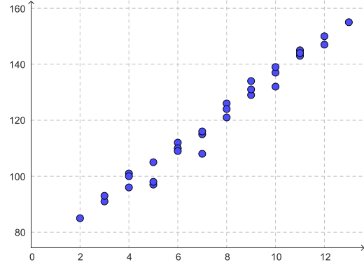
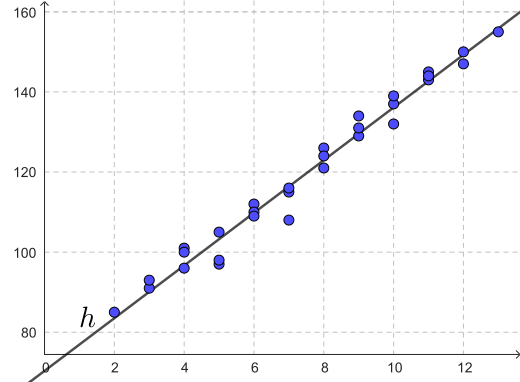
📊 Linear Regression
Predicting height from age:
The data points suggest a linear trend:
\[ h(a) = 6.58a + 70.36 \]
📈 Linear Regression
Predicting height from age:
The data points suggest a linear trend:
\[ h(a) = 6.58a + 70.36 \]
- \( a \): age in years
- \( h(a) \): predicted height in cm
- Slope \( 6.58 \): average growth per year
This line is the line of best fit — found using linear regression.
Polynomial Regression
$y = a_0 + a_1x + a_2x^2 + \cdots + a_nx^n + \epsilon$
We look for a least squares polynomial function of best fit.
🔬 Hooke's Law (Spring Force)
Force needed to stretch a spring:
\[ F(x) = -kx \]
- Linear function
- \( x \): displacement in meters
- \( k \): spring constant (stiffness)
Used in physics, biomechanics, engineering.
We consider the differential equation: \(\ds m \frac{d^2 x}{dt^2}+k x = 0.\)
🔬 Hooke's Law (Spring Force)
The undamped spring
Use mouse to drag mass and release.
$x(t) = A \sin \left(\omega t \right)$
🔬 Hooke's Law (Spring Force)
Damped spring. Use mouse to drag mass and release.
☕️ Law of Cooling & 🧫 Population Growth

|

|
| \(T(t)=\left(T_0-T_m\right) e^{-kt} + T_m\) | $\ds P(t) = \frac{\theta P_0 e^{rt}}{\theta-P_0+P_0e^{rt}}$ |
💊 Medicine in the Body
Drug concentration decreases over time:
\[ C(t) = C_0 e^{-kt} \]
- Exponential decay
- \( C_0 \): initial concentration
- \( k \): decay constant
Models how the body metabolizes medicine.
💊 Medicine in the Body
\[ C(t) = 100 e^{-0.3t} \]
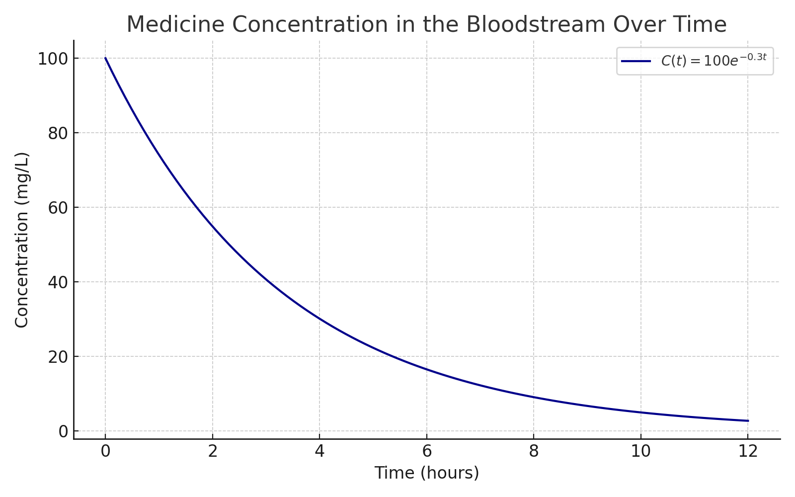
This is a classic example of exponential decay, useful in pharmacology for understanding how a drug's concentration diminishes after administration.
📚 Diminishing Returns in Learning
Modelling learning over time:
Early learning is fast, then progress slows:
\[L(t) = 20 \ln(t + 1)\]
- $t$: time spent learning (hours)
- $L(t)$: performance level
- Logarithmic growth: quick gains at first, then slower improvement
This model captures the idea of diminishing returns in real learning scenarios.
📚 Diminishing Returns in Learning
\[ L(t) = 20 \ln(t + 1) \]
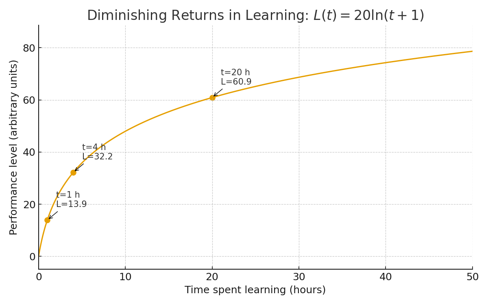
This model shows how learning improves quickly at first and then slows over time, a classic example of diminishing returns in skill acquisition.
Trigonometric functions: Procedural Landscape Generation
\[ f(\mathbf{x}) = \sum_{i=0}^{N-1} A_i \cdot \big[\cos\left(2\pi \, \mathbf{k}_i \cdot \mathbf{x} + \phi_i\right) + \sin\left(2\pi \, \mathbf{k}_i \cdot \mathbf{x} + \theta_i\right)\big] \]
Combined with Linear Algebra
to visualise the 3D surface! 🤯
Computer Graphics & Art
|
|
$f(x) = \sqrt{6^2-x^2}$
$g(x) = 2 + 2 \sin(\text{floor}(x-t) 4321)$ $h_k(x) = \dfrac{-5}{k}+\dfrac{2}{5}, $ $\qquad k=0,1,\ldots, 10$ |
Computer Graphics & Art
|
$R =13 + 3\left(\dfrac{1}{2} + \dfrac{1}{2} \sin \left(2\pi t + \dfrac{z}{3}\right)\right)^4$ $y = z -\abs{x}\sqrt{ \dfrac{20 - \abs{x}}{35} }$ $x^{2}+y^{2}+z^{2}=R$ |
Art with functions in Excel
|
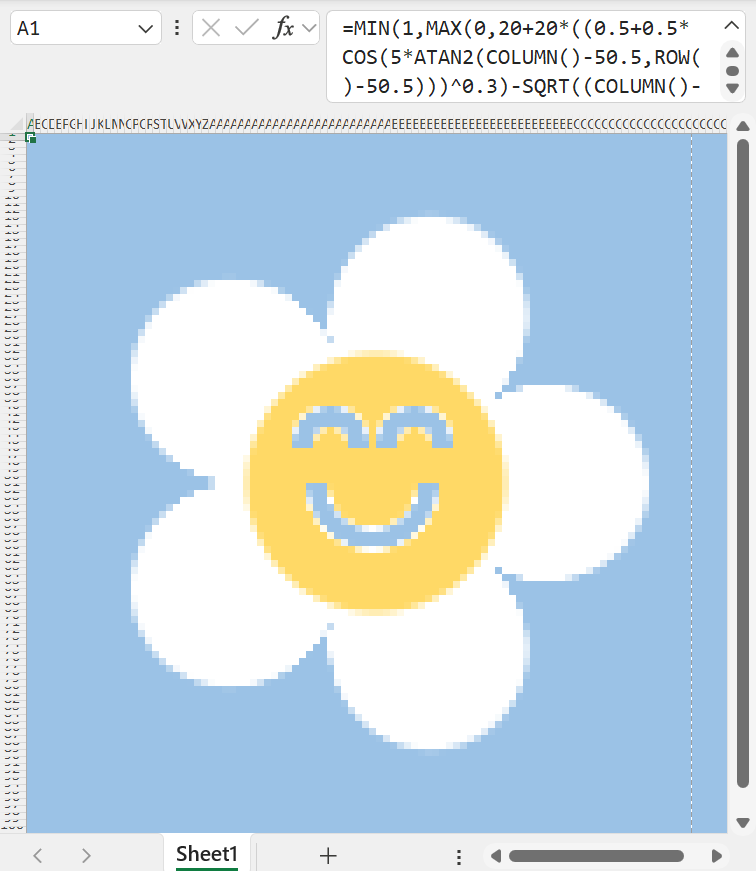 |
Try it yourself! 🌼😊 Tutorial: Painting with Maths in Google Sheets by Iñigo Quilez |
Found Functions
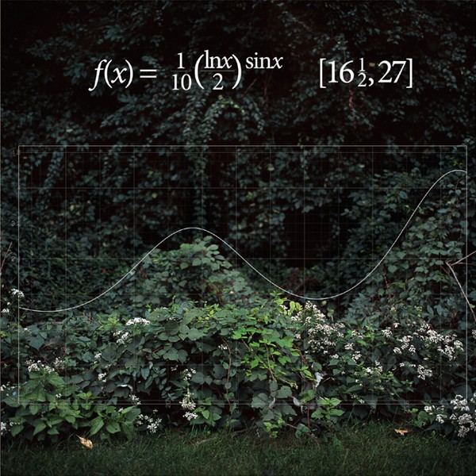
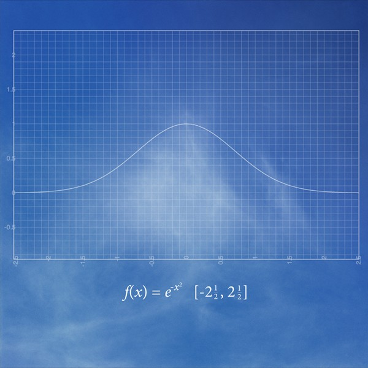
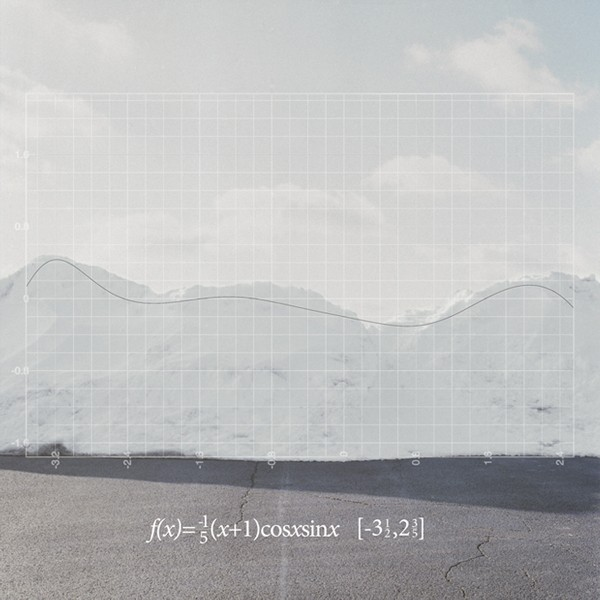
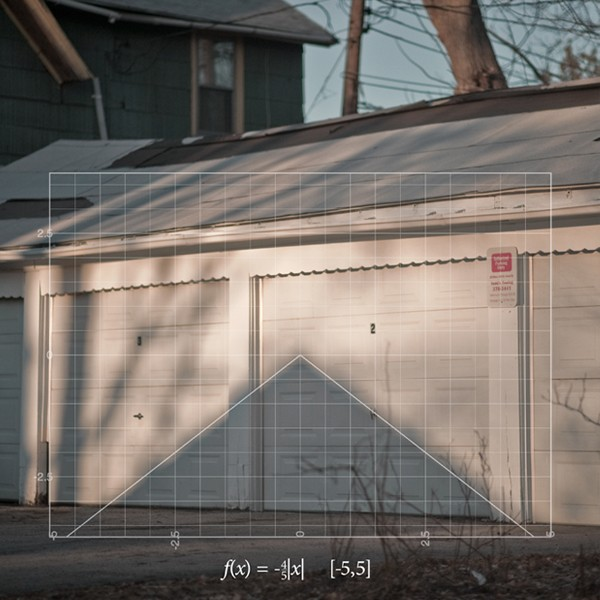
Time in a Bottle by Jim Croce
📝 Practice 😃
📝 Practice: Logarithms
Find without the calculator:
- \(\log(1000)\)
- \(\ln \left(e^3\right)\)
- \(10^{\log(3)}\)
- \(e^{\ln(4)}\)
- \(\log(25)+ \log(4)\)
📝 Practice: Exponential functions
The 🦠 bacteria population is described by the following equation:
\(P(t) = 500 \times 10 ^{0.2 t}\)
$t$ is measured in years.
- Write this as an exponent with base $e$.
- Is the population growing or shrinking?
- What will be the population of bacteria after 3 years?
- After how long does it double or halve? - pick one based on answers to part 1.
- When would it reach a population of 200? of 2000? -pick one based on answers to part 1.
Solution part 1: Write with base e
\(P(t) = 500 \times 10 ^{0.2 t}\)
We rewrite:
\( 10^{0.2t} = \exp\left( \ln\left(10^{0.2 t} \right) \right) \) \( = \exp\big( 0.2 t\ln\left(10 \right) \big) \) \( = e^{0.2t \ln(10)} \)
So \(\; P(t) = 500\, e^{(0.2\ln 10)\, t} \)
Since \(0.2\ln (10) \approx 0.4605\):
\( P(t) \approx 500\, e^{0.4605 t} \)
Solution part 2: Growing or shrinking?
\(P(t) = 500 \times 10 ^{0.2 t}\)
The exponent coefficient is positive:
\(0.2 > 0\;\; \) \(\Rightarrow \;\; \) population grows.
So the bacteria population is growing.
Solution part 3: Population after 3 years
\(P(t) = 500 \times 10 ^{0.2 t}\)
Compute:
\( P(3) = 500 \times 10^{0.2 (3)} \) \( = 500 \times 10^{0.6} \)
\(10^{0.6} \approx 3.981\)
\[ P(3) \approx 500 \times 3.981 = 1990.5 \]
So after 3 years: \(\approx 1991\) bacteria
Solution part 4: Doubling time
Here we need to solve: $ 500 \times 10^{0.2t} = 1000 $
Divide both sides by 500:\(\; 10^{0.2t} = 2 \)
Take log base 10:
\[ 0.2t = \log_{10}(2) \]
\( \Ra \;t = \dfrac{\log_{10}(2)}{0.2} \) \(\approx \dfrac{0.3010}{0.2} \) \( = 1.505 \)
Doubling time ≈ 1.51 years
Solution part 5: When does it reach a chosen population?
Consider population = $2000.$ Solve: $500 \times 10^{0.2t} = 2000 $
Divide both sides by 500:\(\; 10^{0.2t} = 4 \)
Take log base 10: \(\;0.2t = \log_{10}(4) = 0.6021 \)
\[ t = \frac{0.6021}{0.2} = 3.01 \]
So the population reaches 2000 after ≈ 3.0 years.
That's all for today!
See you in Week 6!